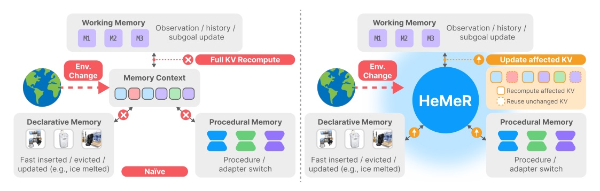
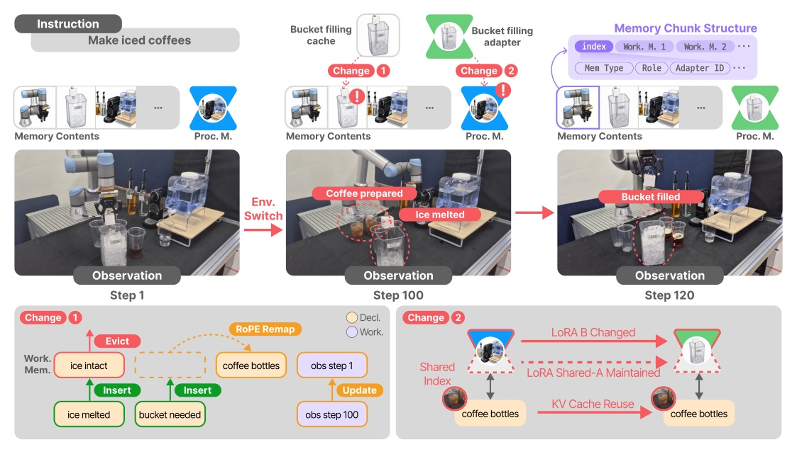
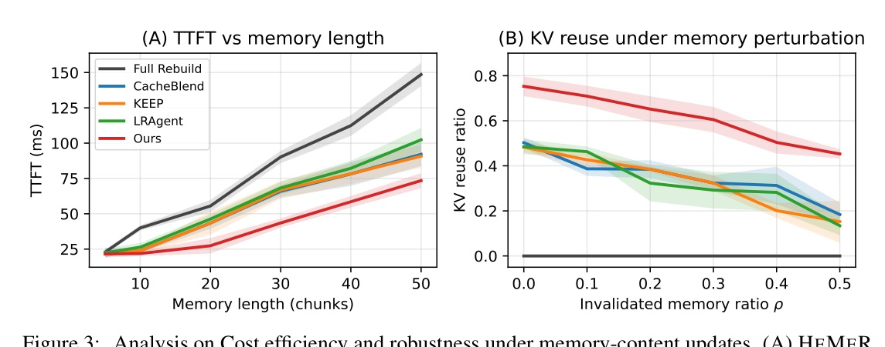

論文：HeMeR: Heterogeneous Memory Reconciliation for Embodied Agents via Structured KV Reuse · arXiv 2611.16487
Reviewer 資料：未取得（venue 依 arXiv comment 與 PDF 頁尾）
具身 agent 每一步都把 declarative / procedural / working 三種記憶組成新的 context，現有做法每步整份 KV 重算。HeMeR 用 schema diff 找出真正變動的 chunk，只重算那段；純位移用 RoPE remap 修正 key；LoRA adapter 切換納入相容條件。ALFWorld 上 SR 52.86% → 71.43%，每步 0.90 s → 0.18 s（對 MemRL）。

| 方法 | 重用依據 | 在具身記憶場景的缺口 |
|---|---|---|
| Prefix caching | 穩定前綴 | 記憶插入 / 重排後前綴就斷 |
| Prompt Cache | 段落獨立計算 | 段落不看前文 |
| CacheBlend | 非前綴 segment + 邊界附近選擇性重算 | 依賴可重用 segment 邊界 |
| KEEP | invalidation-based | 失效區域整塊丟掉，reuse 偏低 |
| LRAgent | 跨 LoRA adapter 共享 KV | 不追蹤 declarative / working 的更新 |

三種記憶模組
每步可能的變動
HEMER makes the same class of non-prefix reuse approximation, but grounds it in schema-indexed memory chunks.
HeMeR 與 CacheBlend 屬同一類非前綴重用近似，但以 schema 索引的記憶 chunk 作為依據。§4.2 p.6
LoRA 配置
意義
| 環境 | Backbone | 說明 |
|---|---|---|
| ALFWorld | Llama-3.2-3B-Instruct | 文字環境 |
| EmbodiedBench Habitat | Qwen3-VL-4B-Instruct | 3D 視覺環境，RGB 觀測 |
| Real-world | — | UR7e 桌面操作，2 任務 × 5 次 = 每方法 10 trials |
| 方法 | ALF SR % | ALF s/step | ALF reuse % | Hab SR % | Hab s/step |
|---|---|---|---|---|---|
| HeMeR | 71.43 | 0.18 | 75.30 | 76.27 | 1.82 |
| MemRL | 52.86 | 0.90 | – | 61.80 | 2.68 |
| KEEP | 51.81 | 0.46 | 48.30 | 59.40 | 2.09 |
| CacheBlend | 48.39 | 0.48 | 50.30 | 56.33 | 1.97 |
| LRAgent | 46.43 | 0.52 | 48.50 | 57.47 | 2.03 |
| ReAct | 47.14 | 0.88 | – | 52.00 | 2.41 |
數值為 mean（± std 略）；reuse「–」表示該方法不做 KV 重用。
| 方法 | SR % | s/step | Reuse % | Active % | Diversity % |
|---|---|---|---|---|---|
| HeMeR | 83.20 | 1.87 | 72.18 | 75.45 | 64.85 |
| MemRL | 64.28 | 2.94 | – | 61.04 | 58.19 |
| KEEP | 63.40 | 2.43 | 48.64 | 62.03 | 56.20 |
| LRAgent | 53.43 | 2.21 | 50.22 | 56.30 | 49.97 |
| CacheBlend | 51.21 | 2.14 | 54.02 | 54.27 | 54.37 |

| Reuse | Reorder | Recompute | Insert | Evict | Total | |
|---|---|---|---|---|---|---|
| HeMeR tokens | 64,128 | 6,437 | 4,219 | 5,358 | 1,742 | 81,884 |
| HeMeR time (s) | 0.0 | 0.0 | 12.9 | 12.4 | 0.0 | 25.8 |
| Full Rebuild tokens | 0 | 0 | 74,784 | 5,358 | 1,742 | 81,884 |
| Full Rebuild time (s) | – | – | 186.5 | 12.4 | 0.0 | 199.4 |
| 更新類型 | K cos | Hidden cos | KL (nats) | Top-1 | Top-5 |
|---|---|---|---|---|---|
| Reordering | 0.973 | 0.985 | 0.036 | 0.80 | 0.96 |
| Insertion before reused | 0.987 | 0.990 | 0.061 | 1.00 | 0.92 |
| Eviction before reused | 0.986 | 0.984 | 0.078 | 0.80 | 0.76 |
| Content change | 0.997 | 0.998 | 0.006 | 0.80 | 1.00 |
| Adapter switch | 0.999 | 0.992 | 0.009 | 1.00 | 0.88 |
| 方法 | Step 1 | Step 5 | Step 10 | Step 20 | Step 30 |
|---|---|---|---|---|---|
| Naive reuse | 0.993 | 0.974 | 0.948 | 0.971 | 0.949 |
| CacheBlend | 0.993 | 0.974 | 0.947 | 0.980 | 0.972 |
| HeMeR | 0.993 | 0.989 | 0.969 | 0.979 | 0.974 |
| Variant | SR % | s/step | Reuse % | Active % |
|---|---|---|---|---|
| Ours | 71.43 | 0.18 | 75.30 | 67.69 |
| w/o Memory Schema | 62.67 | 0.38 | 51.39 | 57.20 |
| w/o Chunk-Level KV Recon. | 59.40 | 0.47 | 42.75 | 55.10 |
| w/o Adapter-Stable KV Recon. | 64.85 | 0.28 | 66.40 | 62.71 |
三個元件各管一件事：schema 找出哪些內容還能用，chunk-level 把內容更新局部化，adapter-stable 確保重用的狀態在 procedural 變更後仍相容。效率提升來自避免重算，SR 提升則來自重用的狀態既局部又相容。
作者自承
我的觀察
Existing memory-augmented agents mainly focus on what to store, retrieve, and update, but do not explicitly address how to reconcile updated memory contexts with reusable KV states during foundation model inference.
現有記憶增強 agent 主要關注存什麼、取什麼、更新什麼，卻沒有明確處理推論時更新後的 memory context 如何與可重用的 KV 狀態對齊。§1 p.2
Rather than treating each memory context as a flat token sequence, HEMER represents it as a sequence of structured memory chunks associated with corresponding KV ranges.
HeMeR 不把 memory context 當扁平 token 序列，而是表示成一串各自對應 KV 範圍的結構化記憶 chunk。§1 p.2
RoPE remapping is used only for matched chunks whose update is a position shift.
RoPE remapping 只用於「更新僅是位置位移」的已配對 chunk。§4.2 p.6
This design limits, but does not eliminate, cross-adapter drift.
這個設計限制、但沒有消除跨 adapter 的漂移。§4.3 p.6–7
This suggests that reusing many KV states is insufficient when procedural memory changes the active adapter.
這表示當 procedural memory 改變了 active adapter 時，只是大量重用 KV 是不夠的。§5.4 p.10
| Habitat | SR % | s/step | Reuse % | Active % | Diversity % |
|---|---|---|---|---|---|
| HeMeR | 76.27 | 1.82 | 72.81 | 71.38 | 56.29 |
| MemRL | 61.80 | 2.68 | – | 57.55 | 54.36 |
| KEEP | 59.40 | 2.09 | 43.05 | 64.58 | 52.40 |
| LRAgent | 57.47 | 2.03 | 42.96 | 58.34 | 44.28 |
| CacheBlend | 56.33 | 1.97 | 46.25 | 51.39 | 53.20 |
| ReAct | 52.00 | 2.41 | – | 51.81 | 42.03 |
| Reflexion | 50.47 | 2.38 | – | 49.66 | 39.27 |
把 agent 記憶當作有結構的資料，KV cache 就能做 diff 而不必整份重算